Как внедрить Business Intelligence для малого и среднего бизнеса
Даже небольшим предприятиям для оптимизации своей работы приходится анализировать много источников информации. Чтобы упростить рутинную работу и свести различные данные в визуально понятные отчеты, существуют специальные системы бизнес-аналитики. Если вы новичок, знакомство с BI стоит начать с самого доступного по цене решения. В этом посте я расскажу именно о нем.

Обзор систем бизнес-аналитики
На Западе пик интереса к Business Intelligence (дальше BI) пришелся на 2008–2012, и рост популярности систем бизнес-аналитики сохраняется по сегодняшний день (хотя уже в меньшей мере). Страны СНГ в сфере аналитики, и в целом сбора и обработки информации, значительно отстают, поэтому в Рунете BI только начинает набирать популярность. На рынке BI технологий уже есть свои лидеры. Платформы Tableau, QlikView, Oracle Business Intelligence — достаточно популярные и мощные, способны связать и визуализировать террабайты информации из различных источниках данных. Основной минус всех перечисленных инструментов — их дороговизна. По данным исследования Gartner, внедрение наиболее популярных BI платформ обошлось бы вам в 2015 году от $13 000 до $71 000, средняя стоимость проекта — $46 525.

На просторах СНГ далеко не каждая компания может позволить себе такие затраты. Особенно — относительно молодой бизнес, который пока не располагает достаточными бюджетами для внедрения серьезных BI решений. К тому же, маленьким компаниям зачастую не требуется вся мощь упомянутых выше продуктов: вряд ли вы наймете два многотонных грузовика, если требуется перевести ведро песка. Именно поэтому я решил рассказать о малоизвестной и достаточно дешевой BI платформе — Ideal Analytics.
Доступные источники данных в Ideal Analytics
В Ideal Analytics все доступные источники данных классифицированы и распределены на семь групп. 1. Box. 2. DataBases.
- IBM DB2;
- IBM informix;
- MS SQL Server 2000;
- MS SQL Server 2005;
- MS SQL Server 2008;
- MySQL server 5;
- Oracle 10g;
- PostgreSQL;
- Sybase IQ;
- File.
- CSV;
- Microsoft Excel 2007;
- Microsoft Excel 1997–2003;
- Google.
- Google Analytics;
- Saleforce. 6. Social media.
- Facebook;
- Linkedin;
- Twitter;
- System. В этой статье мы научимся подключать одну из самых распространенных систем аналитики — Google Analytics. Впрочем, все остальные источники данных подключаются аналогично описанным ниже инструкциям.
1. Подключаем Google Analytics
1.1. Чтобы подключить представление Google Analytics, в меню «+ New» выбираем пункт «New connector».
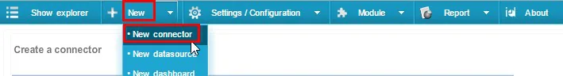
1.2. Заполняем поля в диалоговом окне «Save Connector» следующим образом: 1.2.1. Задаем имя подключения. 1.2.2. При необходимости вводим описание коннектора. 1.2.3. В поле «Connector source type» в выпадающем меню выбираем Google в качестве типа источника; 1.2.4. В поле «Service Provide» будет всего один доступный сервис — Google Analytics, который и требуется выбрать.
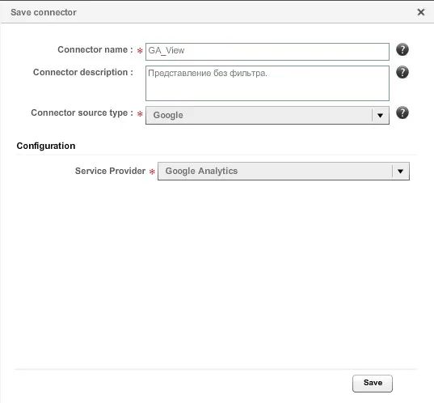
1.3. Далее связываем аккаунт Google с Ideal Analytics, после чего появится сообщение, что соединение настроено.
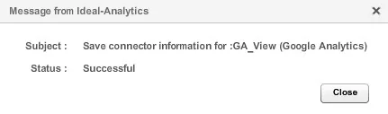
2. Создаем необходимые источники данных
2.1. На основе созданных подключений добавляем источник данных, выбрав в меню «+ New» пункт «New DataSource».
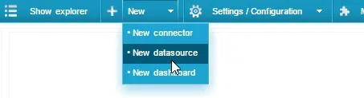
2.2. В диалоговом окне «Save Datasource» задаем имя и описание источника, затем нажимаем на иконку с изображением пустого листа и карандаша.
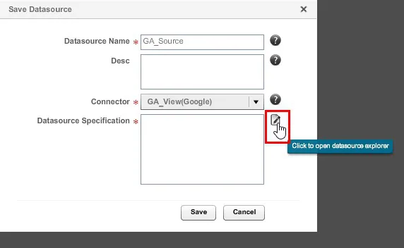
2.3. В открывшемся окне «Data Source Specification Wizard» выбираем нужное представление, параметры и показатели, а также даты, за которые требуется получить данные. Обратите внимание, что аналогично другим инструментам экспорта данных из Google Analytics, существует ограничение на количество параметров (не более семи) и показателей (не более десяти).
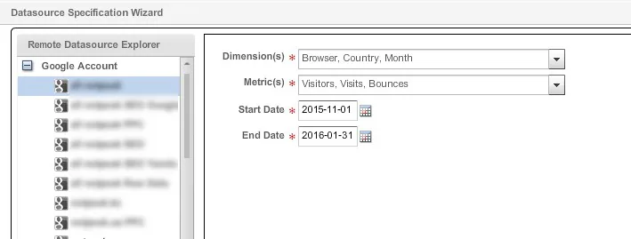
В качестве примера мы выбрали следующие параметры (Dimensions):
- браузер (Browser);
- страна (Country);
- месяц (Month).
Показатели (Metrics):
- посетители (Visitors);
- сеансы (Visits);
- отказы (Bounces ).
Установили фильтр за период с 01.11.2015 по 31.01.2016. 2.4. Для дальнейшей работы жмем кнопку «Show preview». Результат этого запроса отобразиться в нижней части диалогового окна.
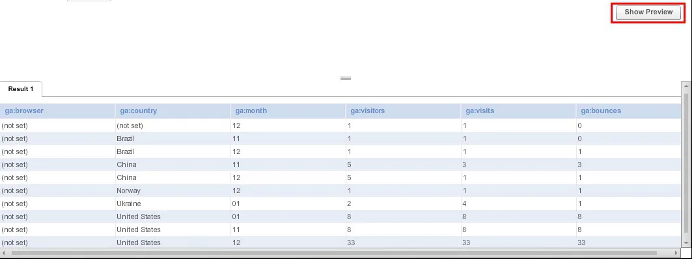
2.5. Завершаем редактирования запроса, нажав «Apply». Кнопка размещена в нижнем правом углу диалогового окна. 2.6. После возвращения в окно «Save DataSource» видим сгенерированный текст нашего запроса в поле «DataSource Specification». Жмем «Save».
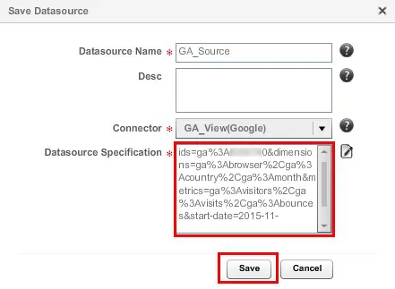
3. Добавляем первую панель мониторинга
3.1. Следующий шаг — создание первой панели мониторинга. Для этого в верхнем меню «+ New» выбираем пункт «New Dashboard».
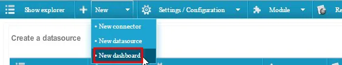
3.2. В диалоговом окне «SaveDashBoard» задаем имя дашборда, устанавливаем тип (персональный или корпоративный) и создаем первую группу, введя название группы панелей мониторинга в поле «DashBoard Group».
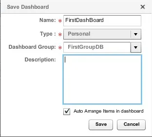
4. Формируем нужные нам наборы данных
4.1. Чтобы создать первый набор данных (DataSet), жмем кнопку «Show explorer» в верхнем левом углу экрана.
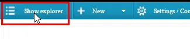
4.2. Левым кликом мыши раскрываем список «APPLICATION ROOT», потом правым кликом жмем на папку «Document Root» и в выпадающем меню выбираем команду «Add Dataset».
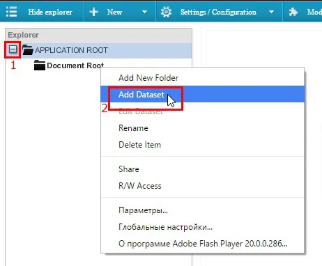
4.3. В открывшемся конструкторе выбираем нужный источник данных.
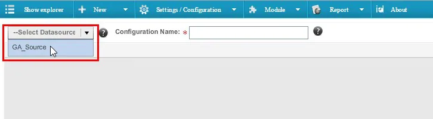
Область «Preview Conteiner» заполнят данные из выбранного нами источника.
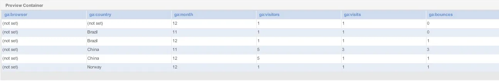
4.4. В поле «Configuration name» вводим имя источника данных, в нашем случае — «GA_Visit_By_Country».
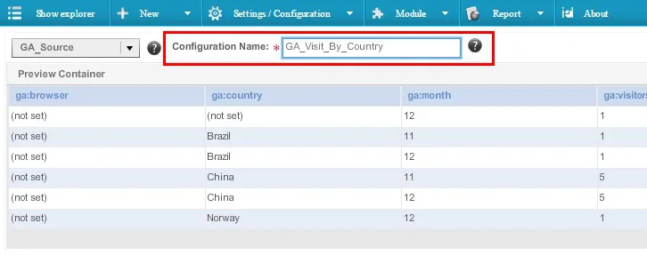
4.5. Далее будем работать с областями «Source Colums» и «DataSet Configuration». Если мы планируем отобразить на дашборде круговую диаграмму, которая будет показывать долю каждой страны в общем объеме трафика, то достаточно будет полей «ga:country» и «ga:vesits». Отмечаем эти поля галочками в области «Source Columns», затем жмем кнопку «>>» для переноса полей в область «DataSet Configuration».
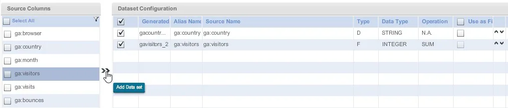
4.6. Теперь мы можем переименовать поля, перенесенные в область «DataSet Configuration». Для этого в столбце «Alias Names» указываем новые название, также можно изменить тип поля. Поля бывают двух типов: параметры (D) и показатели (F). Параметрами служат категории, описывающие объект. Например, страна, дата, месяц, браузер. Показателями служат числовые метрики: количество сеансов, посетителей и другие. В поле «Data Type» можно изменить тип данных. По умолчанию все параметры имеют строчный тип (String), а показатели — числовой (Integer). В поле «Operation» требуется указать тип агрегации для данных, хранящихся в поле по умолчанию. Для параметров агрегация не применяется, поэтому для поля «ga:country» установлено значение N.A., а для «ga:visits» по умолчанию используется суммирование (Sum) — что нам и требуется. При необходимости доступны следующие типы агрегации:
- суммирование (SUM);
- среднее арифметическое (AVG);
- количество записей (COUNT);
- минимальное значение (MIN);
- максимальное значение (MAX);
- накопительное суммирование (CUM_SUM);
- процент смещения (PERCENT_CHANGE).
Правый столбец области «DataSet Configuration» называется «Use as filter», с его помощью можно выбрать поля, по которым планируем фильтровать информацию. Для наглядного примера переведем в область «DataSet Configuration» поле «Month» и поставим напротив его названия галочку в столбце «Use as filter».
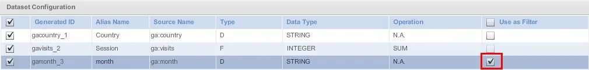
Созданный набор данных появится в области «Explorer».
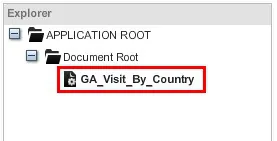
5. Создаем элемент будущего дашборда
5.1. Для создания первого элемента будущей панели мониторинга в окне «Explorer» дважды кликаем левой кнопкой мыши на нужном наборе данных, в нашем случае — «GA_Visit_By_Country», после чего попадем в окно редактирования отчета.
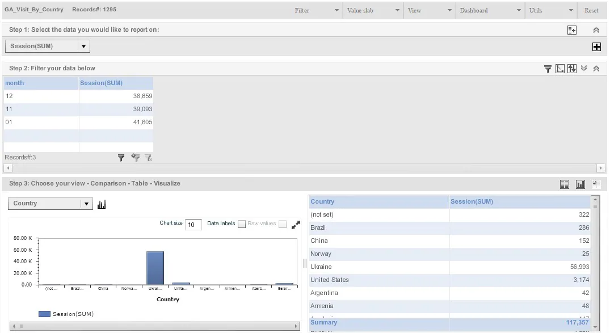
5.2. Далее выбираем способ агрегации показателей, для нашего примера — это суммирование по полю «Session». Если бы в наборе данных было больше показателей, мы могли бы вывести в таблицу или на график больше показателей. 5.3. Для фильтрации данных необходимо кликнуть левой кнопкой мыши по строке со значением 01 в столбце «Month». Эта функция возможна благодаря тому, что, разрабатывая набор данных (на втором шаге настройки элемента дашборда), в поле «Month» мы установили галочку «Use as filter».
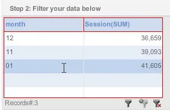
5.4. Последний шаг на пути создания элемента панели мониторинга — это настройка визуализации данных.
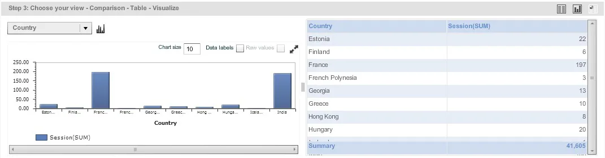
Ideal Analytics в качестве представления данных по умолчанию устанавливает отображения и диаграммы и таблицы данных. Чтобы выбрать нужные нам элементы визуализации, воспользуемся набором кнопок, который находится в правом верхнем углу окна настройки.
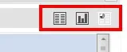
Кликнув на иконку с диаграммой, выбираем сравнительный тип визуализации, в котором отображается только диаграмма, без таблицы данных. В режиме сравнения доступны следующие типы диаграмм:
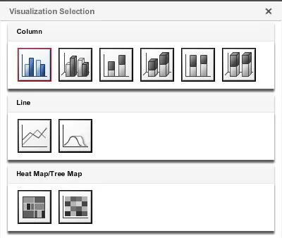
- гистограмма (column);
- график (line);
- карты эффективности / древовидная карта (heat map / tree map).
Нажав на кнопку с изображением таблицы, перейдем в табличный режим, без графиков и диаграмм. Также нам доступны некоторые настройки таблиц: для их изменения необходимо кликнуть на иконку с изображением шестеренки.
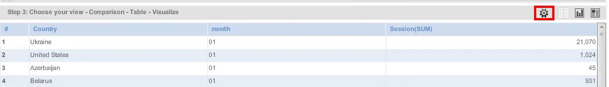
Окно дополнительных настроек таблицы:
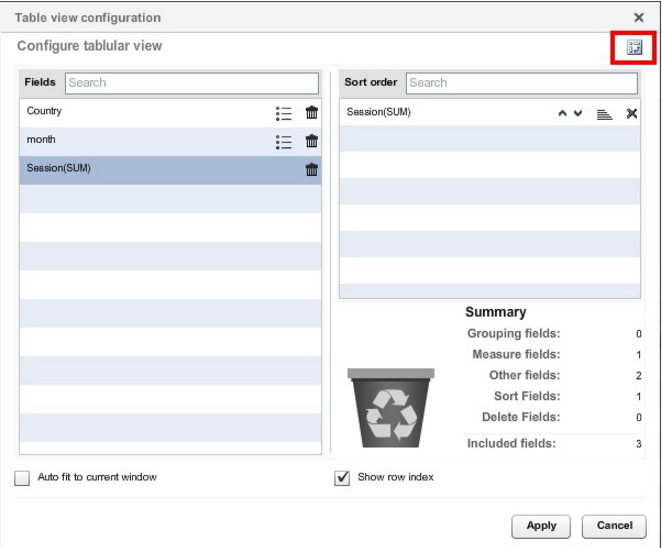
В области «Field» настраиваем группировку полей и их иерархию. Перетянув поля в область «Sort», можно настроить порядок сортировки данных. Самая интересная функциональность открывается после нажатия на кнопку, выделенную на рисунке выше, — это переключатель между режимом обычной и сводной таблицы. Перейдя в режим сводной таблицы, мы можем строить отчеты любой сложности, компоновать данные любым нужным образом.
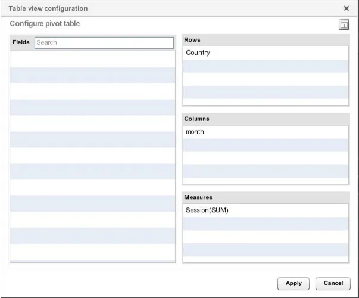
Перетащив поля, согласно приведенному выше примеру, мы построим перекрестную таблицу. В строках будут перечислены страны, в столбцах — данные по месяцам, а в качестве значений — количество сеансов.
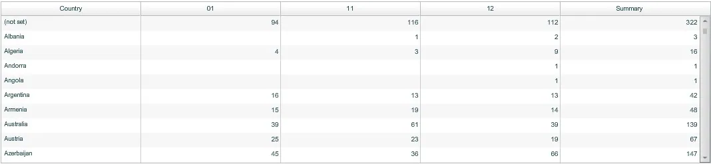
5.5. Предлагаю все же вернуться в режим визуализации. Это можно сделать, нажав на иконку с изображением таблицы и диаграммы.
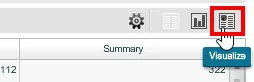
Режим визуализации предоставляет большой выбор диаграмм. Чтобы изменить тип диаграммы, жмем на иконку, которая располагается над построенной по умолчанию гистограммой.
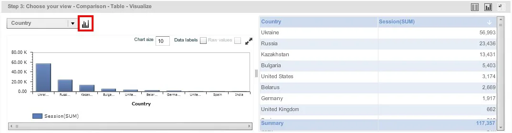
Выбираем подходящий тип диаграммы:
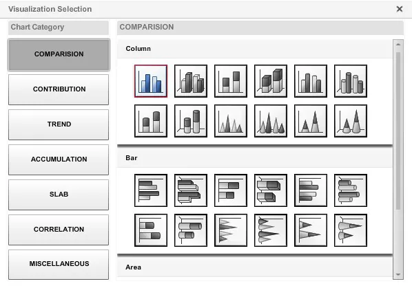
Все доступные диаграммы сгруппированы по типам сравнения и области применения: Позиционное сравнение (Comparison):
- гистограмма (Column);
- линейчатая (Bar);
- диаграмма с областями (Area).
Покомпонентное сравнение (Contribution):
- нормализованная гистограмма (Column);
- нормализованная линейчатая диаграмма (Bar);
- нормализованная диаграмма с областями (Area);
- круговая диаграмма (Pie / Doughnut).
Временное сравнение, тренды (Trend):
- график (Lines).
Накопление (Accumulation):
- воронка (Piramid / Funnel).
Датчик (Slab):
- спидометр (Circular gauge);
- вертикальный датчик (Vertical Linear Gauge);
- горизонтальный датчик (Horizontal Linear Gauge);
- корреляция (Correlation);
- пузырьковая диаграмма (Bubble).
Прочие (Miscellaneous):
- радар / лепестковая диаграмма (Radar);
- маркированная (XY Plotter / Marker);
- древовидные карты (Tree map).
При разработке набора данных мы запланировали добавить на дашборд диаграмму, отображающую долю каждой страны в общем объеме трафика. Для решения этой задачи подходят круговая диаграмма или древовидная карта. Поскольку в нашей таблице содержится информация по более чем 50 странам, а круговые диаграммы поддерживают до 50 элементов, мы построим древовидную карту.
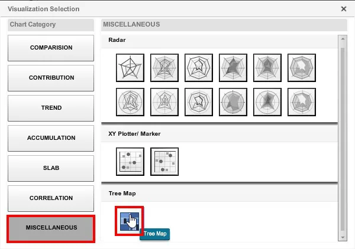

Если хотите узнать, какой тип диаграммы подойдет для ваших данных, читайте статью «Как построить диаграмму и не облажаться».
Для более читабельного вида следует поставить галочку «Data Labels». На этом работа над первым элементом панели мониторинга завершена.
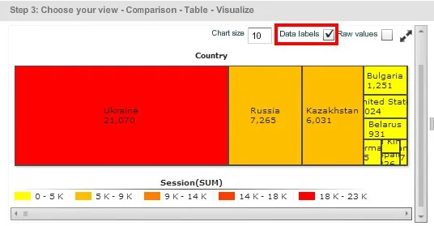
5.5. Чтобы добавить созданный элемент на ранее созданный дашборд, в верхнем меню с одноименным названием выбираем пункт «Save to Corporate / Personal dashboard» (зависит от того, на какой тип панели мониторинга нужно добавить элемент). Ранее мы создали пустой дашборд, выбрав в качестве его типа «Personal», соответственно нам подходит пункт «Save to Personal dashboard».
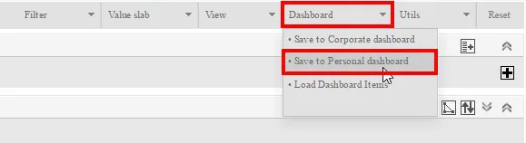
5.6. В открывшемся диалоговом окне «Create DashBoard» нам следует выбрать между добавлением нового или заменой уже существующего элемента дашборда. Потом — задаем имя, заголовок элемента и выбираем, в какую панель мониторинга его требуется добавить. Также в данном окне можно создать новую панель мониторинга.
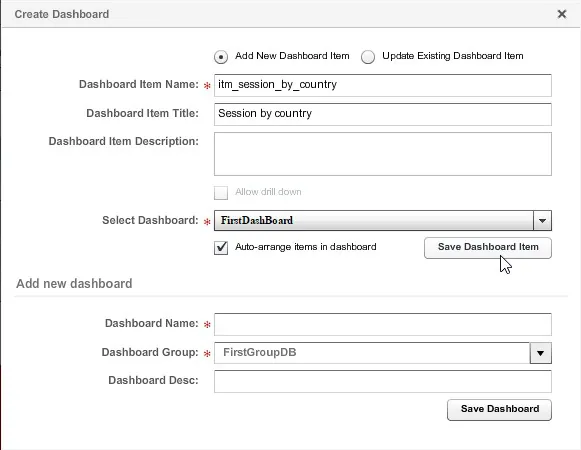
5.7. Далее жмем «Save DashBoard item».
6. Добавляем вычисляемые поля в Ideal Analytics
Закрепим материал и дополнительно рассмотрим, как создавать вычисляемые поля. Для этого мы добавим на дашборд диаграмму, отображающую показатель отказов в зависимости от используемого браузера. Для этого создаем еще один набор данных на основе подключенного источника данных. Отметим, что в одну панель мониторинга можно встраивать элементы, созданные на основе совершенно разных подключений и источников. Вернемся к процессу разработки набора данных. Повторяем шаги, описанные в пункте 4 с учетом, что конфигурация источника данных, описанная в пункте 4.5, в этот раз будет такой:
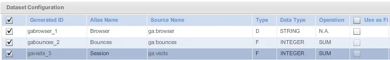
Далее перейдем к разработке нового элемента диаграммы на основе созданного набора данных. Следуйте инструкциям, описанным в пункте 5. В качестве значения мы планируем вывести показатель отказов, но в наборе данных у нас нет этого показателя. Зато существуют поля, на основе которых можно его рассчитать. Поэтому далее опишем процедуру создания вычисляемого поля. 6.1. Кнопка управления вычисляемыми полями находится под основным меню дашборда.
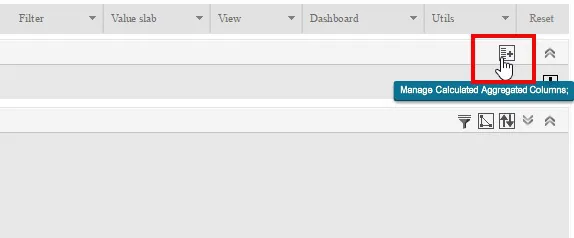
Для создания поля «BounceRate» используем такую формулу:
@gabounces_2(SUM)@ / @gavisits_3(SUM)@ * 100
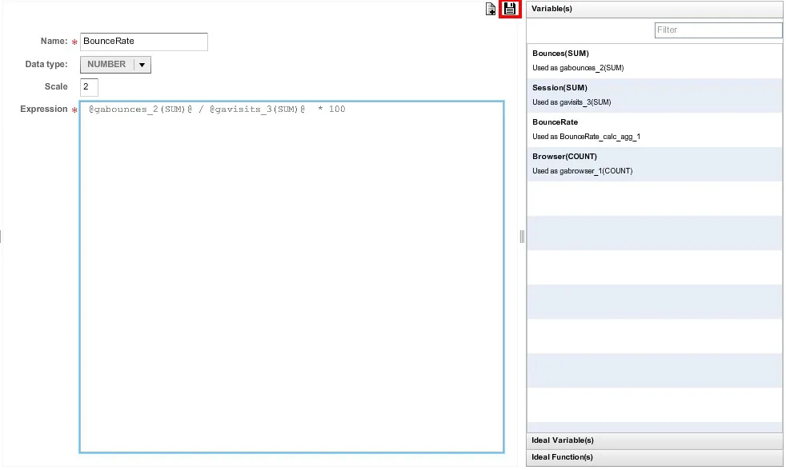
После нажатия кнопки с изображением дискеты в левой части диалогового окна «Manage Calculated Aggregate Value Columns» появится созданное вычисляемое поле.
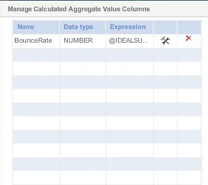
Также созданное вычисляемое поле теперь доступно в области «Select the data you would like to report on».
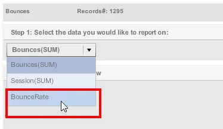
6.2. Добавляем к нашей визуализации поле «Session». Это позволит вывести на график десять браузеров, из которых идет основной поток трафика, и не учитывать показатель отказов в менее популярных браузерах, из которых было всего несколько сеансов.
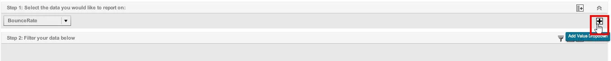
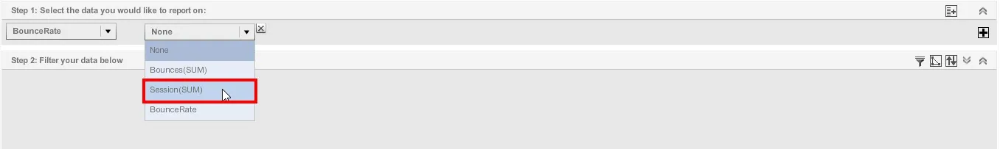
6.3. Кликнув по столбцу «Session» (SUM), отсортируем данные в табличной части области: «Chose your view» — «Comparion» — «Table» — «Visualize».
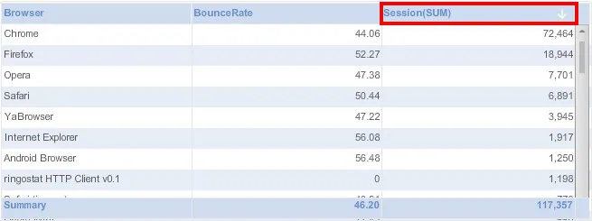
6.4. В области диаграммы нажимаем на кнопку настроек.
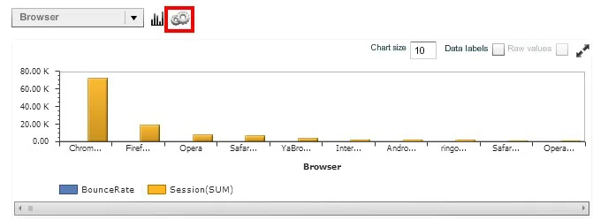
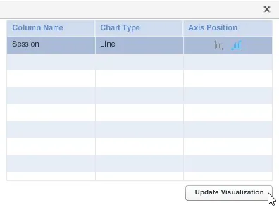
6.5. Чтобы сделать диаграмму максимально полезной и удобной, в столбце «Chart Type» для поля «Session» установим тип «Line». Поскольку шкала данных по количеству запросов значительно выше, чем по показателю отказов, переключаем поле «Sessions» на дополнительную шкалу — необходимо кликнуть по соответствующей иконке в столбце «Axis Position». После нажатия кнопки «Update Visualization» диаграмма будет выглядеть приблизительно так:
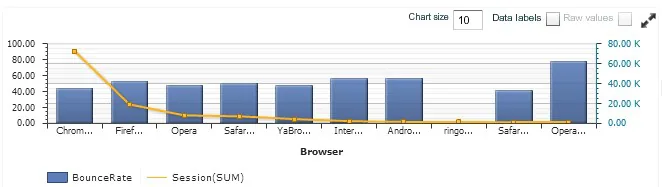
Синие столбцы отображают уровень показателя отказов по каждому браузеру, а желтая линия — объем трафика. Как видим, пользователи чаще всего используют Google Chrome, при этом показатель отказов у таких посетителей около 40%, что значительно ниже, чем по остальным браузерам. 6.6. Чтобы добавить новый элемент, воспользуемся пунктом «Save to Personal dashboard» в меню панели мониторинга.
7. Начинаем работу с созданным дашбордом
7.1. Посмотрим на созданный ранее дашборд — выбираем пункт «DashBoard» в меню «Module».
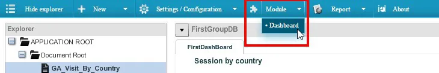
После этого будет открыт список всех доступных панелей мониторинга.
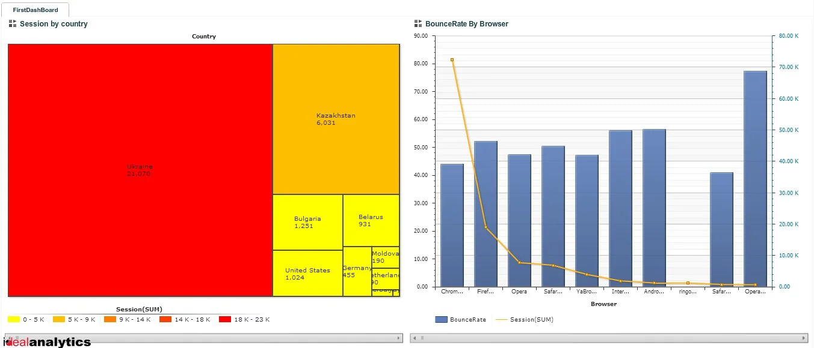
7.2. Дашборд можно расшарить и разослать ссылки с онлайн-доступами даже тем пользователям, которые не являются пользователями Ideal Analytics. Чтобы поделиться панелью мониторинга, воспользуемся кнопкой «Share» в меню, расположенном в верхней части дашборда.
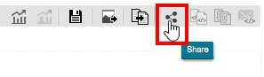
После этого нам будут доступны остальные функции данного меню. С их помощью можно получить:
- сгенерированный HTML код для вставки дашборда на сайт или в электронное письмо;
- прямую ссылку, которой можно поделится с любым пользователем.
Надеюсь, я сумел раскрыть в статье основные возможности Ideal Analytics. Несмотря на то, что функционал этой BI платформы значительно уступает конкурентам, его наверняка будет достаточно для решения большинства задач малого и среднего бизнеса.
Больше конкретных советов по визуализации данных — в серии статей «Как работать с Excel в рекламной кампании».
UPD:
Создатели Ideal Analytics на официальном сайте сервиса рекомендовали эту статью в качестве русскоязычного мануала.